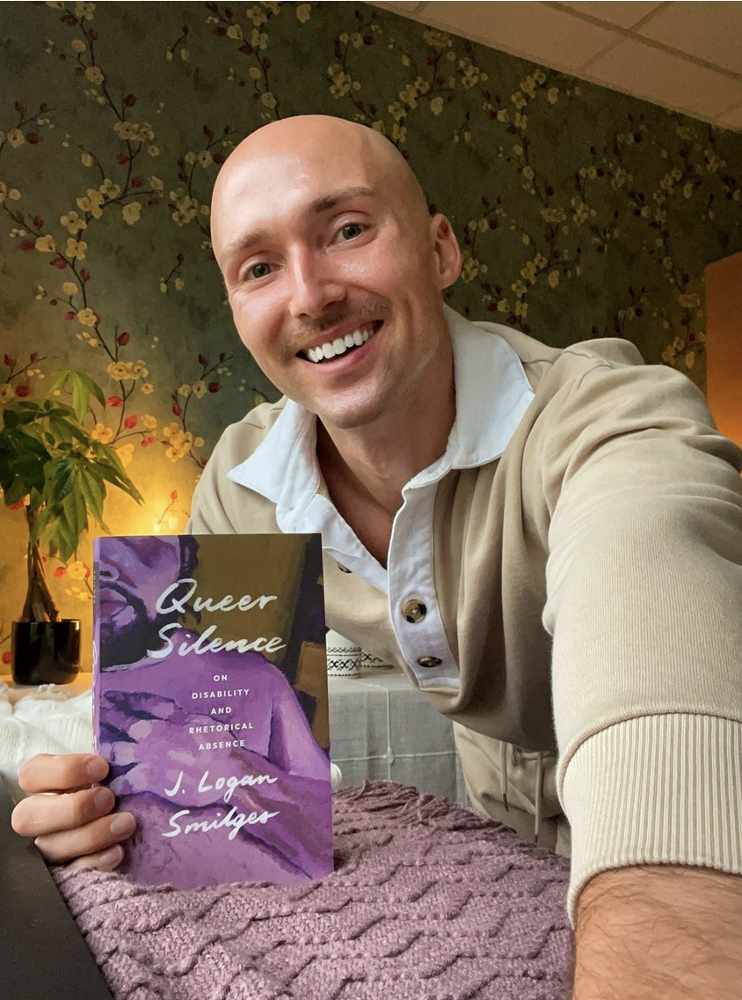

Introduction
Within the queer community, digital spaces remain limited and sparce, places where belonging coexists uneasily. One such space is the app Grindr. From the start, Grindr facilitated encounters between gay men within a geographical radius. Yet, the platform’s design favoring clean, muscular, white men, fosters what Dr. J. Logan Smilges critiques as “rhetorical silence”:not only in within Grindr but silence around minorities and marginalized people. In doing so, they resist being fully seen, and in return gay men are creating an identity in a digital space that is meant to be open to all gay men..
Contemporary queer rhetorics alongside writing and digital pedagogy foreground tensions between visibility and safety, identity and institutional demands. Students in writing classrooms often balance authenticity with the need to conform, they learn to speak out or stay silent depending on the topic or how authenticity is examined by the dominant culture. Grindr’s design mirrors this tension. It nudges users toward editing their bios and curating their images while simultaneously acknowledging the parts of queer identity that must remain hidden for bodily, social, or emotional safety.
Takeaways for Readers
Through my webtext, I encourage readers to reconsider how digital spaces claim to foster connections amongst all commmunities and peoople while also reinforce exclusion. Grindr may offer easy accessibility in which men and chat with other men in a digital space. For many gay men this may seem easy, but its design and culture can also silence marginalized identities through what Dr. J. Logan Smilges describes as "rhetorical silence." Readers should recognize that online platforms are not neural, they shape identity, visibility, and power. Ultimately, this project invites readers to question who is centered, who is pushed to the margins, and how digital communities can both include and exclude at the same time.
Webtext Breakdown & Kairos Connection
This webtext situates itself at the intersection of queer rhetorics, digital technology, and pedagogical design. The tabs located within my Webtext form a dynamic rhetorical journey moving from spoken conversation to analytic unravelling, from method to reflection. Each tab represents a component of my interview with Dr. Smilges as I focus my attention on their scholarship within the realm of Rhetoric, Technology, and Pedagogy.
Featured Scholar: Dr. J. Logan Smilges

Dr. J. Logan Smilges, an associate professor at the University of British Columbia in the Department of English Language and Literatures, research at the nexus of queer/trans disability studies, the history of medicine, and rhetorical studies. Their first book, Queer Silence: On Disability and Rhetorical Absence (University of Minnesota Press, 2022), explores how silence operates not as absence, but as a strategic rhetorical modality for queer disabled subjects. They followed this with Crip Negativity (2023), a critique of liberal disability politics, pushing toward more expansive conceptions of disability liberation.
Smilges’s scholarly influence extends through numerous peer-reviewed articles, including “White Squares to Black Boxes: Grindr, Queerness, Rhetorical Silence” (Rhetoric Review, 2019), which parses how Grindr profiles mediate queer visibility through visual silence a key foundation for this project. Their work has earned prestigious honors the Lavender Rhetorics Award, Presidents Dissertation Award, Denise Haunani Solomon Teaching Award all signaling their innovative contributions to queer, trans, and disability rhetorics. With pronounced commitments to transfeminism, disability justice, and accessible pedagogy, they stand as a guiding voice for this project’s intersections of rhetoric and digital learning. Through the interview, Dr. Smilges speaks on these intersections in relation to silence, embodiment, digital spaces.
Connection To My Own Research
My doctoral thesis investigates queer rhetorics within Grindr, tracing how identity is composed, punctuated by constraints on self-representation. In dialogue with Smilges, I conceptualize these constraints as forms of rhetorical quieting what they describe through silence as resistance. In our interview (see Transcript tab), Smilges remarks, “those blank or chest-only profile pictures enact a politics of refusal” (Transcript, line 142), positioning silence as a rhetorical strategy that protects and asserts non-normative embodiment.
Conclusion
This webtext aspires to not only focus on the rhetorical silence emlpoyed by Dr. Smilges, but how that connects to digial spaces, technology, and writing. By centering Smilges’s scholarship and my own research, this project signals toward pedagogies that honor queerness, and disability.